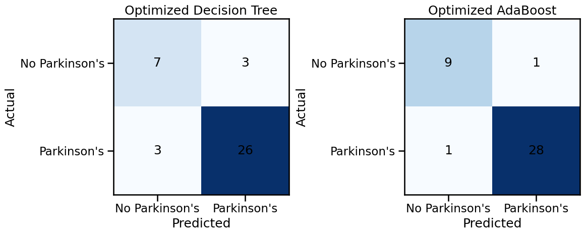
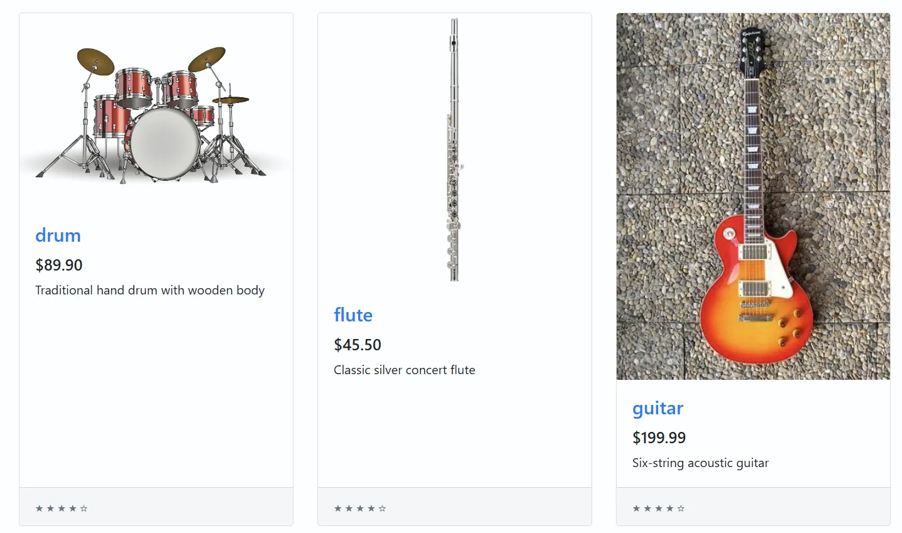
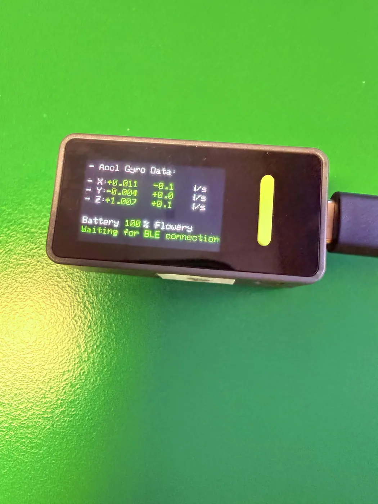
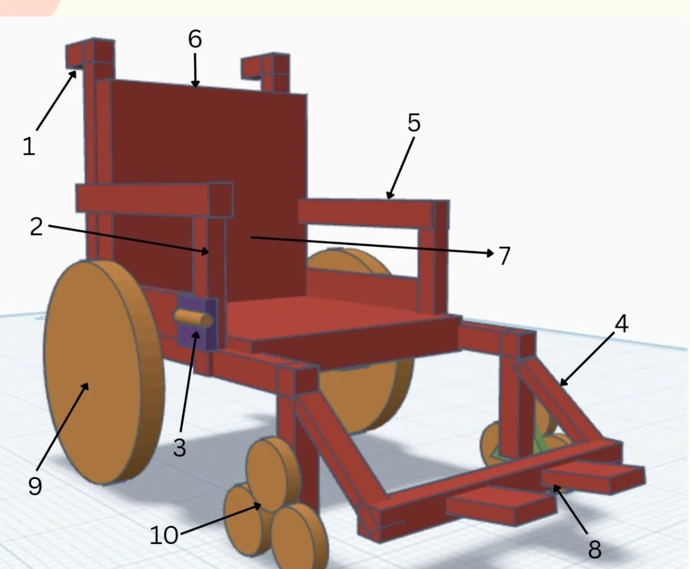

Latest project07 / NASA SPACE APPS · HACKATHONOutpost 07A Roblox lunar mission trainer using NASA space-weather data.View project ↗
Latest project07 / NASA SPACE APPS · HACKATHONOutpost 07A Roblox lunar mission trainer using NASA space-weather data.View project ↗All projects.
Showing 7 projectsLatest project07 / NASA SPACE APPS · HACKATHONOutpost 07A Roblox lunar mission trainer using NASA space-weather data.View project ↗
06 / MACHINE LEARNINGParkinson’s Disease PredictionI compared Decision Tree and AdaBoost models using Parkinson’s voice measurements.View project 05 / DATA ANALYTICSRoad Safety & Infrastructure AnalysisMy Power BI analysis of Singapore road infrastructure, accidents, injuries and deaths.View project
05 / DATA ANALYTICSRoad Safety & Infrastructure AnalysisMy Power BI analysis of Singapore road infrastructure, accidents, injuries and deaths.View project

04 / CLOUD COMPUTINGAWS Music Store Web ApplicationA nine-instrument catalogue on AWS, with MySQL product data and S3 images.View project
03 / DATA ENGINEERINGNESSO Safety Monitoring SystemWe used four NESSO devices to collect movement readings and flag possible safety incidents.View project 02 / IOT & EMBEDDED SYSTEMSIoT System for Sustainable Household LivingAn Arduino and Raspberry Pi prototype for household automation.View project
02 / IOT & EMBEDDED SYSTEMSIoT System for Sustainable Household LivingAn Arduino and Raspberry Pi prototype for household automation.View project

01 / ENGINEERINGTri-Star Wheel PrototypeOur small-scale tri-star wheel prototype, with an Arduino-controlled motor circuit.View projectNo projects found.
Try a different search or category.